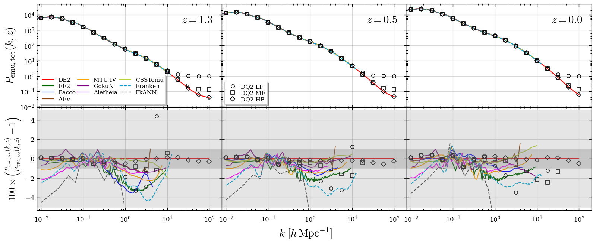
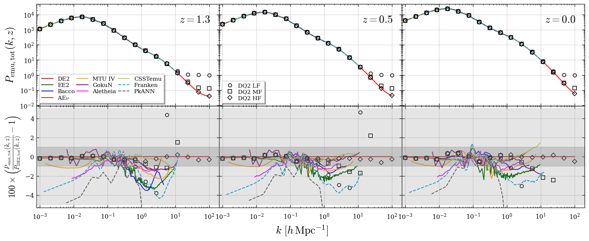
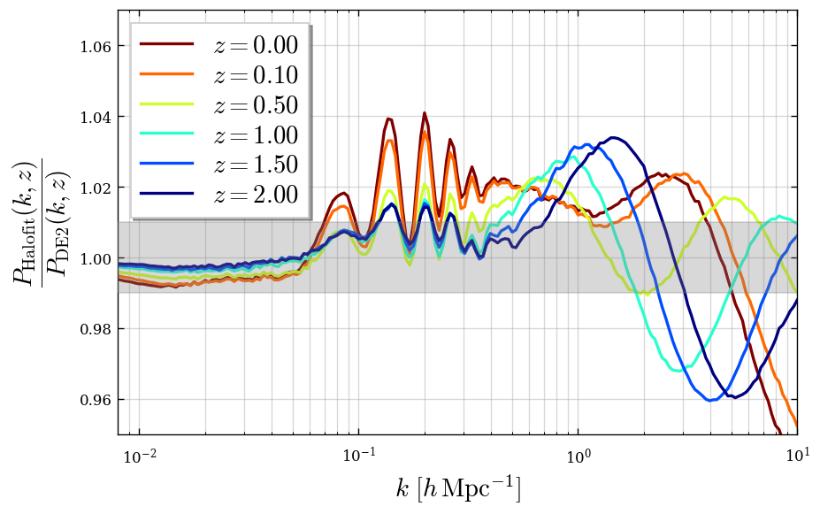
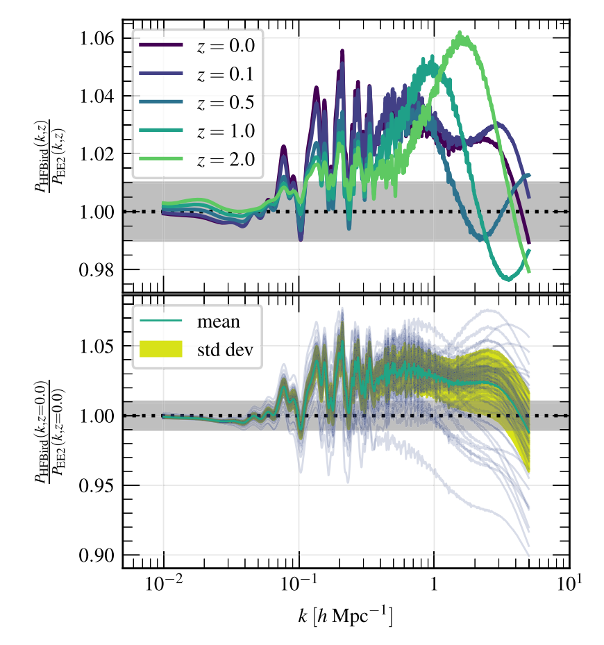
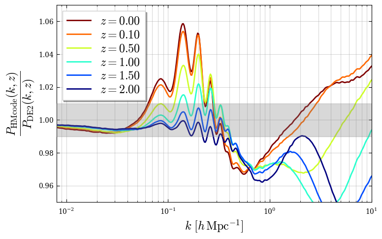
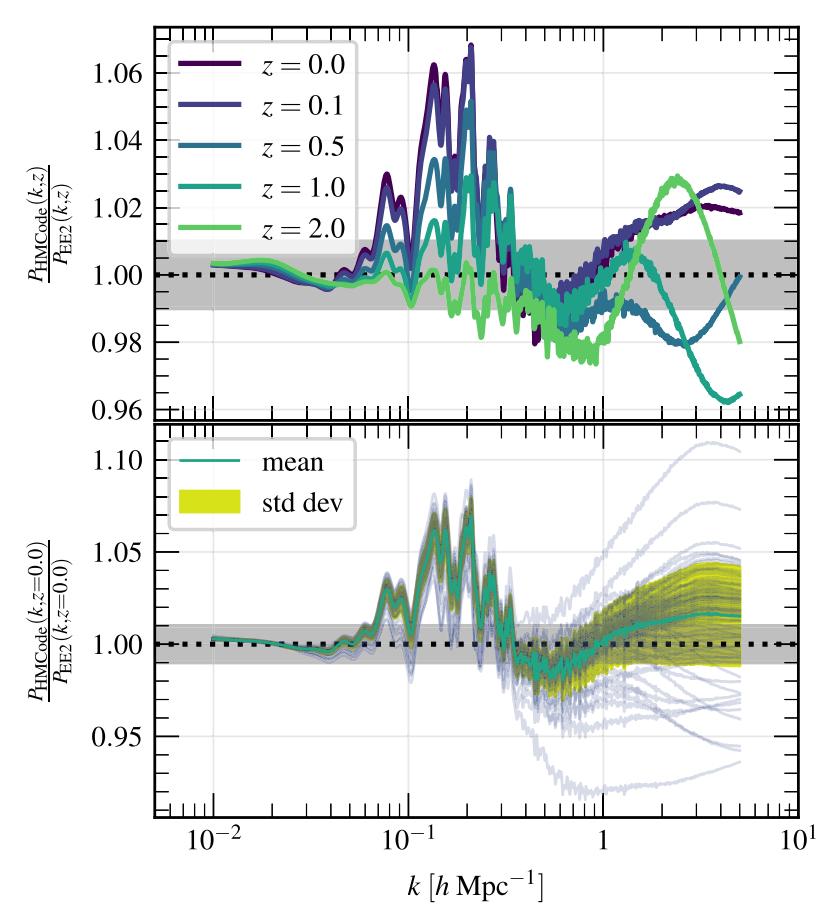
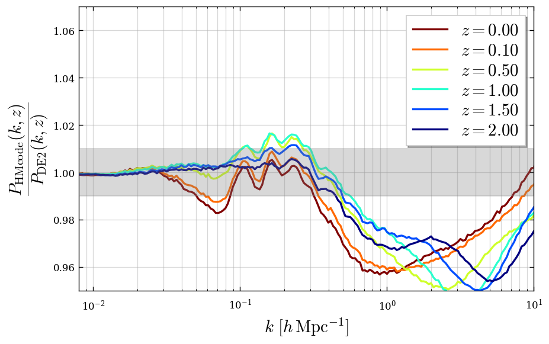

Comparison at the fiducial parameters
'Omega_m': 0.3156
'omega_b': 0.02225
'omega_cdm': 0.1198
'Mnu': 0.06
'Omega_k': 0.0
'Omega_de': 0.68434
'sigma8': 0.831
'ns': 0.9645
'w0': -1
'wa': 0
'h0': 0.6723473803969963
'ln(10^10As)': 3.094
'As': 2.201865180098782e-09
'Omega_nu': 0.001425041731402498
'dist': 0Comparison with DarkEmulator2
Total-matter nonlinear \(P(k)\)
- Since Aletheia does not support massive neutrinos, the neutrino contribution is absorbed into \(\omega_\mathrm{cdm}\).
DE2 narrow k-range; \(k = 10^{-2} - 10^2 \,\,\,[h\, \mathrm{Mpc}^{-1}]\)

DE2 full k-range; \(k = 10^{-3} - 10^2 \,\,\,[h\, \mathrm{Mpc}^{-1}]\)

HMcode and Halofit checks
- Halofit (Bird 2012) comparison with DE2 and EE2 (as reported in the EE2 paper)


- HMcode (Mead 2016) comparison with DE2 and EE2 (as reported in the EE2 paper)


- HMcode (Mead 2020) comparison with DE2
